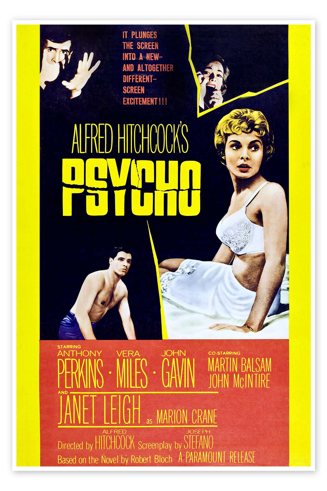
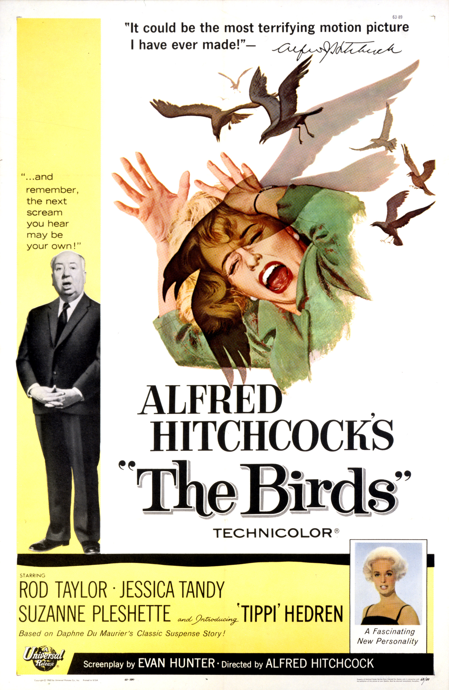
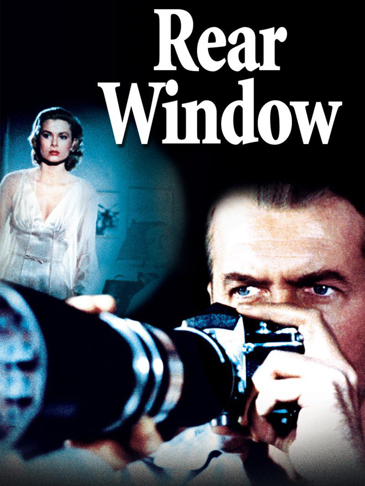

Alfred Hitchcock
Psicosis

Título original: Psycho
Año: 1960
Duración: 1h 49min
Puntuación: 8,5 / 10
Sinopsis: Una secretaria de Phoenix malversa cuarenta mil dólares de un cliente, se da a la fuga y se registra en un motel remoto administrado por un joven con una controladora madre.
Estrellas: Anthony Perkins, Janet Leigh, Vera Miles
Anécdota: En un principio, Hitchcock insistió en que la escena de la ducha no debería tener música, pero su mujer le convenció de que lo intentara. Más tarde, Hitchcock dijo: "El treinta y tres por ciento del efecto de Psycho se debió a la música".
Premios: Nominada a 4 premios Óscar, 8 premios y 14 nominaciones en total.
Vértigo

Título original: Vertigo
Año: 1958
Duración: 2h 8min
Puntuación: 8,2 / 10
Sinopsis: Un antiguo detective de la policía de San Francisco lucha contra sus demonios personales y se obsesiona con la inquietantemente bella mujer por la que ha sido contratado para seguirle el rastro, que podría estar profundamente perturbada.
Estrellas: James Stewart, Kim Novak, Barbara Bel Geddes
Premios: Nominada a 2 premios Óscar, 9 premios y 8 nominaciones en total.
Los pájaros

Título original: The Birds
Año: 1963
Duración: 1h 59min
Puntuación: 7,6 / 10
Sinopsis: Una adinerada mujer de la alta sociedad de San Francisco persigue a un posible novio en un pequeño pueblo del norte de California que poco a poco da un giro hacia lo extraño cuando pájaros de todo tipo empiezan a atacar a la gente.
Estrellas: Rod Taylor, Tippi Hedren, Jessica Tandy
Premios: Nominada a 1 premio Óscar, 5 premios y 7 nominaciones en total.
La ventana indiscreta

Título original: Rear Window
Año: 1954
Duración: 1h 52min
Puntuación: 8,5 / 10
Sinopsis: Un fotógrafo en silla de ruedas espía a sus vecinos desde la ventana de su apartamento en Greenwich Village, y se convence de que uno de ellos ha cometido un asesinato, a pesar del escepticismo de su novia, modelo de moda.
Estrellas: James Stewart, Grace Kelly, Wendell Corey
Premios: Nominada a 4 premios Óscar, 7 premios y 14 nominaciones en total.